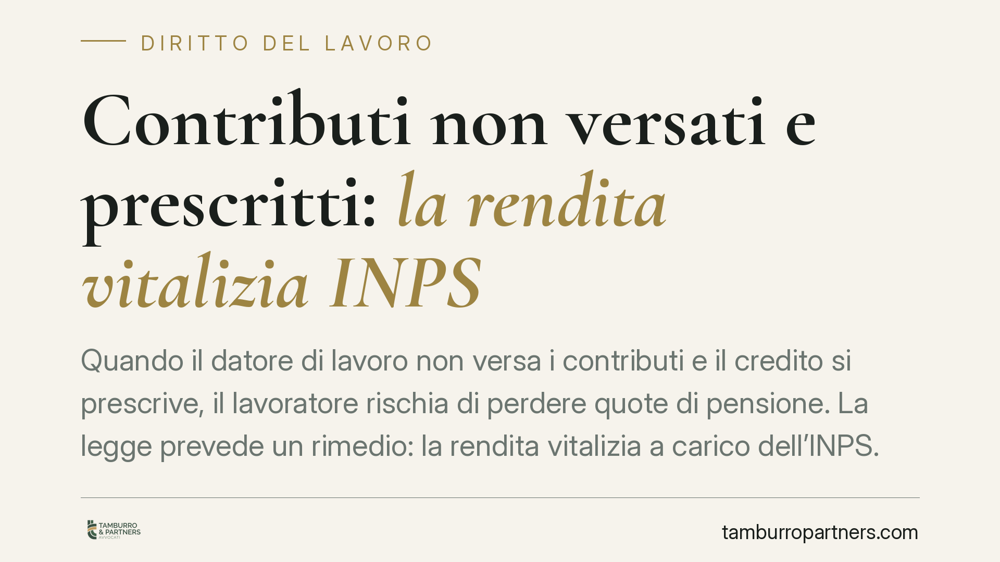

Contributi non versati e prescritti: la rendita vitalizia INPS
Quando il datore di lavoro non versa i contributi e il credito si prescrive, il lavoratore rischia di perdere quote di pensione. La legge prevede un rimedio: la rendita vitalizia a carico dell'INPS. Una recente pronuncia del Tribunale di Rovigo chiarisce come provare il rapporto e ricostruirne durata e retribuzione.

Il caso
Un lavoratore scopre che, per determinati periodi, il datore di lavoro non ha versato i contributi previdenziali dovuti. Il problema è che quei contributi, trascorso il termine di legge, si prescrivono: non possono più essere richiesti né versati, con un danno diretto sulla futura pensione.
Il Tribunale di Rovigo, Sezione Lavoro, è tornato sul tema affrontando due nodi ricorrenti: quale rimedio spetta al lavoratore e, soprattutto, con quali mezzi di prova può ricostruire un rapporto di lavoro spesso risalente nel tempo.
Inquadramento normativo
Lo strumento è la cosiddetta rendita vitalizia disciplinata dall'art. 13 della Legge 12 febbraio 1962, n. 1338. La norma consente al lavoratore (o, in alternativa, al datore di lavoro) di costituire presso l'INPS una rendita che sostituisce i contributi ormai prescritti, ripristinando in tutto o in parte la posizione previdenziale perduta.
In concreto, chi attiva il rimedio versa all'INPS una somma (la cosiddetta "riserva matematica") calcolata sulla base della retribuzione e della durata del rapporto. In cambio, l'ente accredita i periodi mancanti ai fini pensionistici.
Il punto delicato riguarda la prova. Secondo l'art. 13, l'esistenza del rapporto di lavoro deve essere dimostrata con prova scritta: buste paga, contratti, documentazione fiscale o previdenziale, corrispondenza. Non bastano, su questo aspetto, le sole dichiarazioni testimoniali.
La giurisprudenza, confermata dalla pronuncia di Rovigo, distingue però tra due profili. L'esistenza del rapporto va provata per iscritto. La sua durata e la misura della retribuzione, invece, una volta accertata per iscritto l'esistenza del rapporto, possono essere ricostruite anche con altri mezzi: presunzioni e testimonianze.
Implicazioni pratiche
La distinzione ha conseguenze operative rilevanti per chi si trova senza contributi versati.
Se il lavoratore dispone anche di un solo documento che attesti l'esistenza del rapporto in un dato periodo, non è necessario che possieda la documentazione completa relativa a ogni singolo mese o all'importo esatto delle retribuzioni. Questi elementi possono essere ricostruiti in giudizio con testimoni (colleghi, altri dipendenti) e con presunzioni logiche fondate sui documenti disponibili.
È un'apertura importante, perché i rapporti interessati sono spesso lontani nel tempo, con documentazione andata dispersa. Pretendere una prova scritta integrale di durata e retribuzione, in molti casi, equivarrebbe a negare in radice il diritto.
Resta invece un limite invalicabile: senza alcun documento che dimostri l'esistenza del rapporto, la sola prova testimoniale non è sufficiente. È quindi essenziale conservare ogni traccia scritta dell'attività lavorativa, anche minima.
Sul piano economico, va considerato che la costituzione della rendita comporta un esborso. Quando il mancato versamento è imputabile al datore di lavoro, il lavoratore che anticipa la somma può agire per il risarcimento del danno nei confronti del datore stesso, nei limiti della prescrizione applicabile all'azione risarcitoria.
Cosa fare in concreto
- Verificate l'estratto conto contributivo INPS. Controllate periodo per periodo la presenza di buchi e confrontatela con la vostra storia lavorativa effettiva.
- Recuperate ogni documento scritto relativo ai periodi scoperti: buste paga, contratti, lettere di assunzione, CU, comunicazioni aziendali, estratti bancari con accrediti stipendio.
- Individuate possibili testimoni, in particolare ex colleghi, utili a ricostruire durata e retribuzione dei periodi non documentati integralmente.
- Valutate la rendita vitalizia ex art. 13 come rimedio quando i contributi risultano ormai prescritti e non più recuperabili in via ordinaria.
- Consigliamo di quantificare l'esborso e le azioni di rivalsa verso il datore di lavoro prima di attivare la procedura, così da avere un quadro completo di costi e recuperi possibili.
Conclusioni
La prescrizione dei contributi non chiude ogni porta. La rendita vitalizia dell'art. 13 offre una via per non perdere anni di anzianità previdenziale, a condizione di muoversi con la documentazione giusta. La pronuncia di Rovigo conferma un approccio equilibrato: rigore sulla prova del rapporto, ragionevolezza sulla ricostruzione di durata e retribuzione.
---
*Contributo informativo a cura di Tamburro & Partners - Avv. Giuseppe Tamburro. Non costituisce parere legale.*
Ogni storia di lavoro ha i suoi tempi.
Se gestisci HR e vuoi un confronto su contenzioso, ispezioni o licenziamenti, scrivi allo studio. Ti rispondiamo entro un giorno lavorativo.